TROIS OBJECTIFS.
Plan marketing digital pour le costume 3 pièces Slim-Fit — collection Cérémonie EXIST.
EXIST, la mode masculine tunisienne.
Une marque de prêt-à-porter masculin présente en ligne, avec des univers de style allant de la collection quotidienne à la catégorie Costume & Cérémonie.
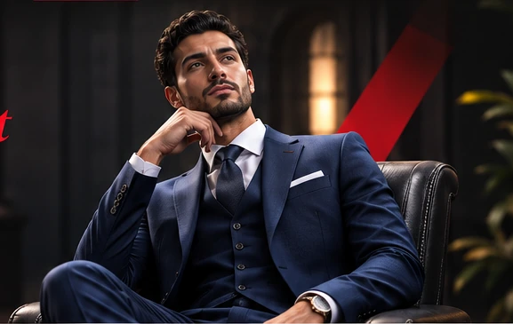
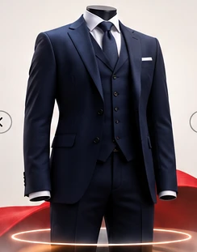
VESTEGILETPANTALONCostume 3 pièces
Slim-Fit.
Une tenue complète destinée aux moments marquants : mariages, fiançailles et cérémonies.
Yassine.
28 ans.
Il prépare un événement important. Son objectif : être élégant et marquer les esprits, tout en réalisant un achat réfléchi.
« Je veux une tenue qui marque les esprits avec une coupe impeccable, mais je veux aussi faire un achat intelligent. »
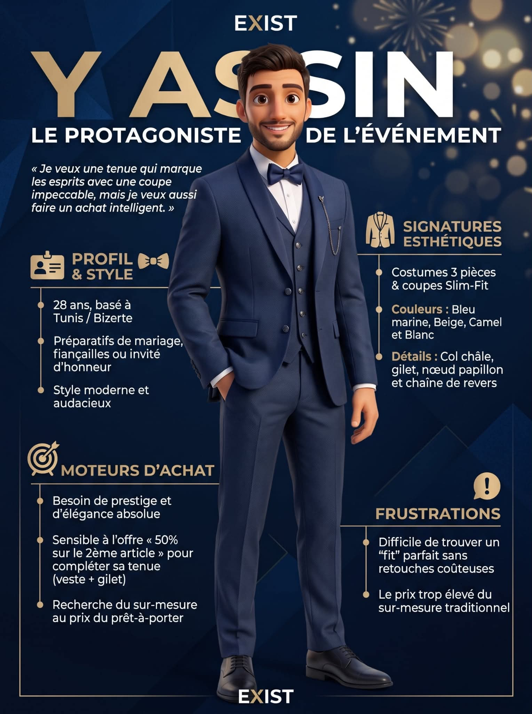
La carte d’empathie guide nos choix.
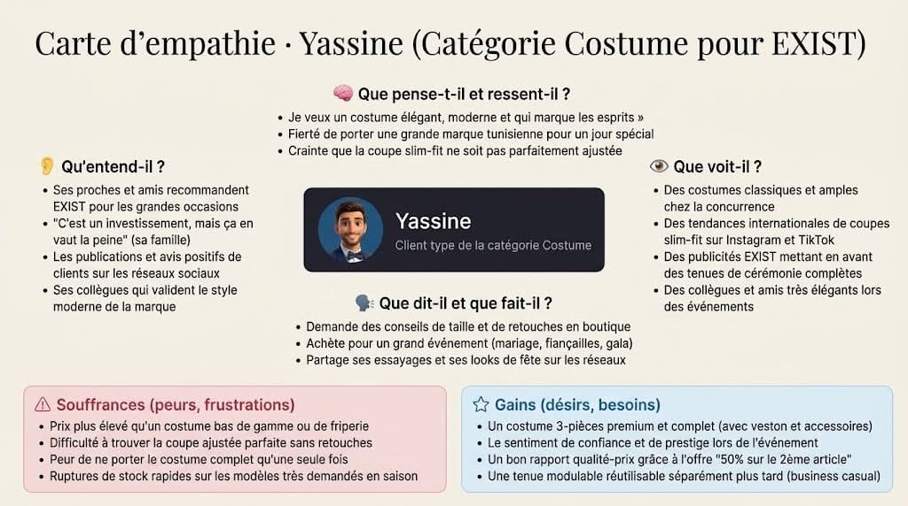
Cliquer pour agrandir ↗« Une tenue qui marque les esprits. »
Des tendances Slim-Fit et des looks élégants.
Une mauvaise taille, des retouches et un budget élevé.
Du style, du conseil et un achat rassurant.
Une campagne.
Un parcours cohérent.
ATTIRER
Faire découvrir le costume dans les fils d’actualité.
Facebook · Instagram · ReelsCONVERTIR
Réduire les hésitations, faciliter l’action.
Landing page · Guide · CTAFIDÉLISER
Prolonger la relation et encourager le retour.
Email · Conseils · AccessoiresCréer le premier contact.
Facebook et Instagram
sur la landing page
Faire découvrir le costume 3 pièces Slim-Fit EXIST à une audience concernée par les événements, puis l’amener sur notre page de campagne.
Le Yassine qui découvre.
Hommes de 23–35 ans intéressés par la mode masculine, les mariages et les événements, notamment dans le Grand Tunis et à Bizerte.
Les canaux où l’attention naît.
Posts, carrousels et inspirations de cérémonie.
Pourquoi : Yassine observe les tendances et les tenues portées.Diffusion et partage des publications.
Pourquoi : Les recommandations sociales influencent son choix.Reel
Transformer un look quotidien en silhouette de cérémonie.
Pourquoi : Une vidéo courte illustre la transformation et la coupe.Meta Ads
Amplifier les meilleurs contenus auprès du segment cible.
Pourquoi : Une stratégie payante permet de dépasser la portée organique.Des visuels qui donnent envie.
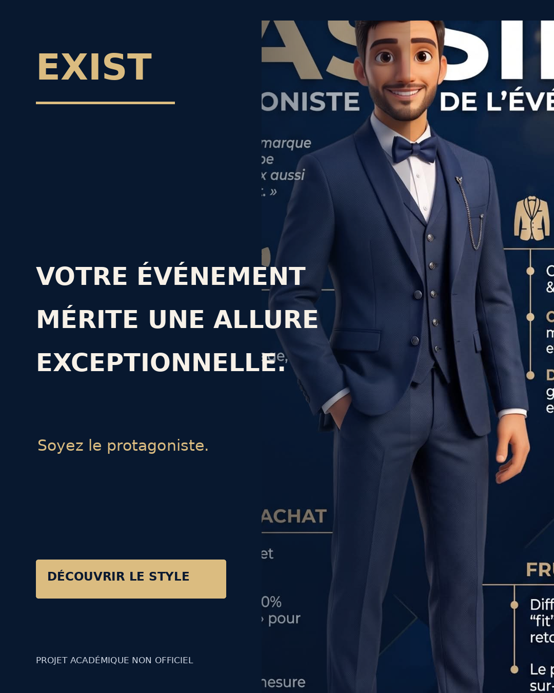
POST FACEBOOK / INSTAGRAM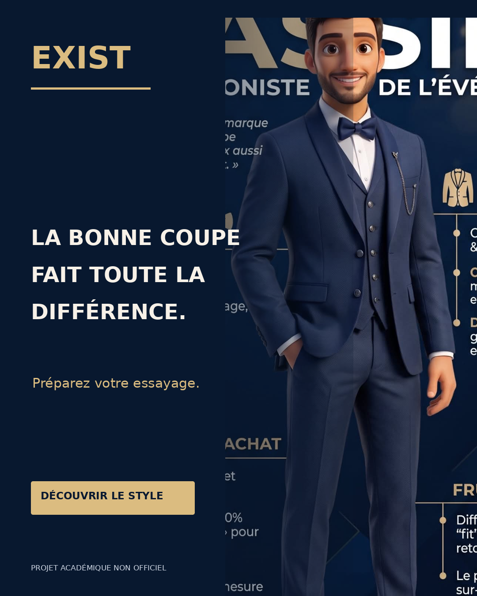
POST DE CAMPAGNE 02Un look.
Une transformation.
Reel 15–30 s : tenue quotidienne → costume → moment de cérémonie → CTA.
5–20 s · Transformation
20–30 s · Découverte
Transformer l’intérêt
en action mesurable.
microconversions
aide à la décision
À partir de 1 200 sessions ciblées, accompagner le prospect jusqu’au choix de sa taille et au clic vers le site marchand officiel.
Le Yassine
qui hésite.
Il connaît la collection, mais veut vérifier que son costume est à la bonne taille et qu’il prend une décision raisonnable.
« Je ne veux pas payer pour un costume qui nécessite ensuite des retouches coûteuses. »
Une expérience produit claire, un guide indicatif et un CTA vers la boutique officielle.
Lever les freins.
Faciliter le choix.
Landing page
Mettre en scène le costume et ses caractéristiques.
Pourquoi : Yassine a besoin d’informations regroupées et claires.Guide de tailles
Proposer une aide indicative au choix.
Pourquoi : L’ajustement constitue son principal frein.GSAP + 3D
Explorer silhouette, détails et occasions.
Pourquoi : L’expérience visuelle rend les spécificités lisibles.CTA + retargeting
Conduire vers EXIST puis relancer avec consentement.
Pourquoi : La comparaison peut retarder le passage à l’action.Une landing page
pensée pour convaincre.
Prototype Next.js : visuels immersifs, GSAP, éléments 3D décoratifs, galerie et guide de tailles.
cd landing-page && npm install && npm run dev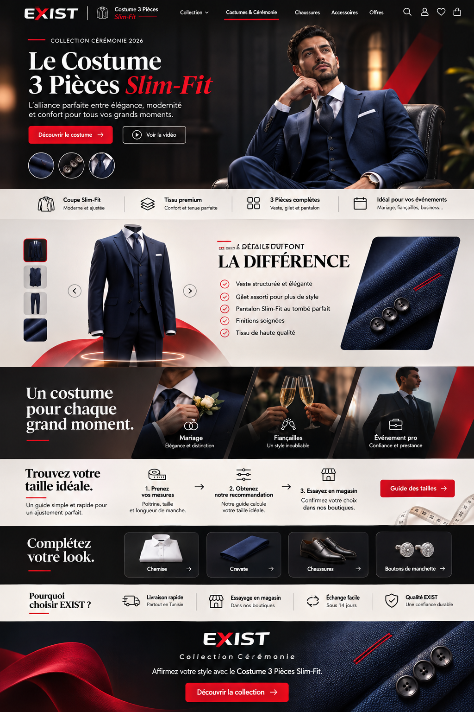
L’élégance continue.
retour vers la gamme
fidélité EXIST
Sur une cohorte pilote hypothétique de 200 clients consentants, prolonger la relation par des conseils et des recommandations adaptées.
Le Yassine
après l’événement.
Il possède son costume. Notre rôle est de lui apporter de la valeur après l’achat et de l’aider à le porter autrement.
« Je veux conserver mon costume en bon état et le réutiliser avec style. »
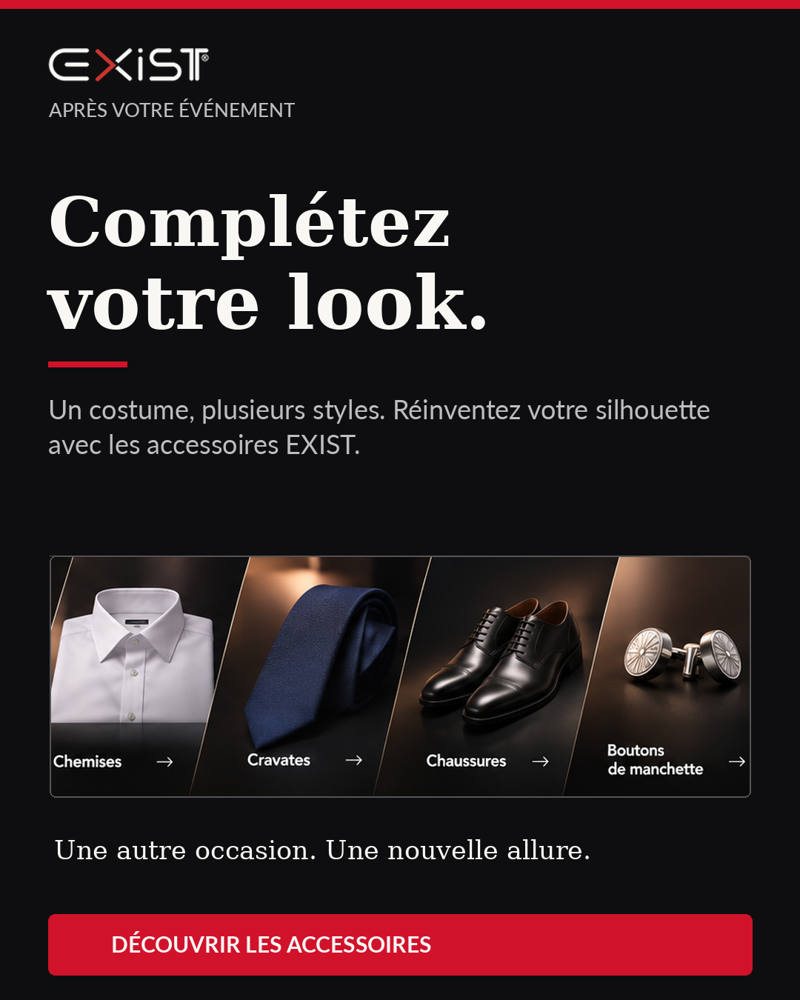
Une relation qui dure.
Email post-achat
Remercier et partager conseils et recommandations.
Pourquoi : Relation personnalisée après le premier achat.Carrousel d’entretien
Donner des gestes pour préserver le costume.
Pourquoi : Valeur utile, non exclusivement promotionnelle.Cross-selling
Proposer chemises, cravates et chaussures.
Pourquoi : Compléter plutôt que remplacer le costume.Carte de fidélité EXIST
Faire connaître le programme EXIST déjà existant.
Pourquoi : Fidéliser sans inventer un club non officiel.Après l’achat, on reste présent.
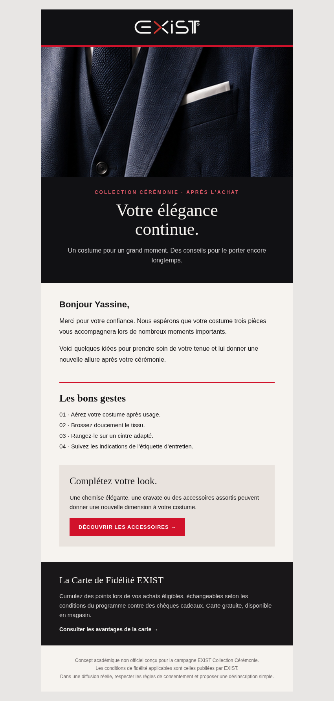
EMAIL POST-ACHAT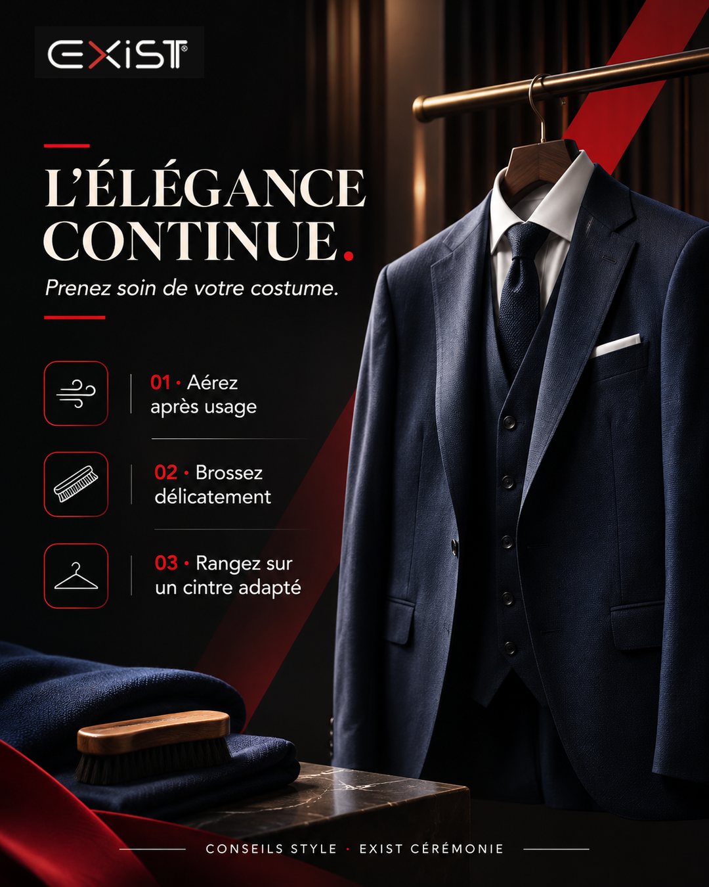
CONSEILS D’ENTRETIEN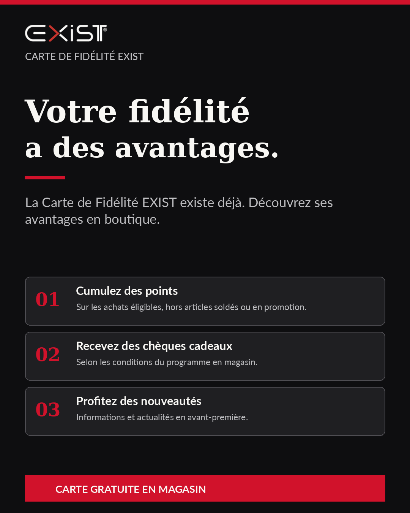
CARTE DE FIDÉLITÉLes chiffres qui comptent.
Les campagnes peuvent se chevaucher. Les objectifs sont prévisionnels et non des résultats.
UN COSTUME.
TROIS RAISONS
DE REVENIR.
Une stratégie construite à partir de Yassine, de ses besoins et de contenus concrets.
Toutes les diapositives
← → navigation · F plein écran · N notes · M sommaire · clic sur les images pour agrandir · 19 min